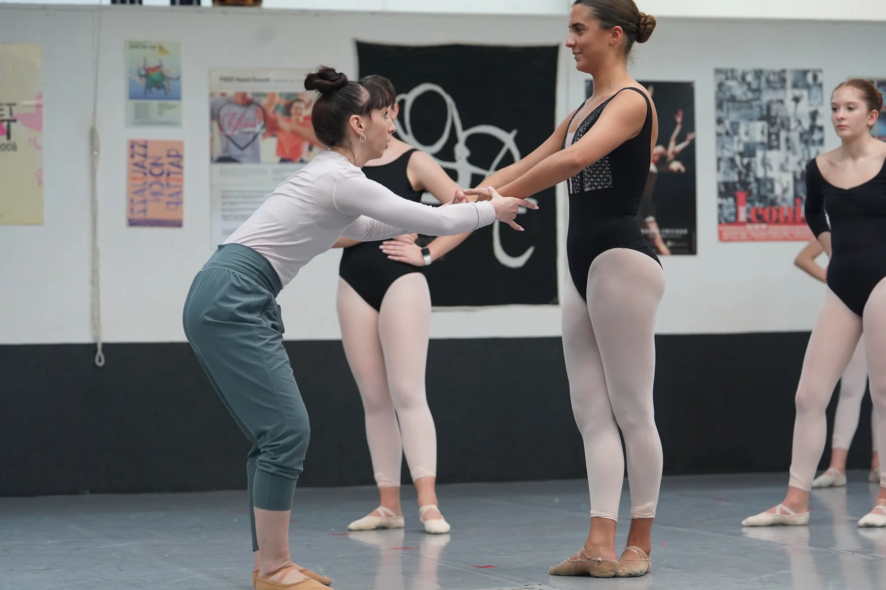

Teaching
Technique.
Musicality.
Freedom.
Guest teaching & master classes
A demanding room that still feels good to move in.
Maeghan brings the same clarity, physicality and musical awareness that define her choreography into the studio.
Her teaching experience spans schools, summer intensives, professional training programs and master classes across the United States. She has served on faculty at the USA International Ballet Competition, CNADM, the South Carolina Governor’s School for the Arts and Humanities, and Pittsburgh Ballet Theatre School.
From 2024 to 2026, Maeghan taught Jazz across multiple levels at Pittsburgh Ballet Theatre School, Contemporary in the Graduate Program, and Jazz for the PBT Dance and Fitness Program.
In the room
Strong foundations. More possibilities.
Technique is the foundation, not the endpoint.
Musicality, dynamics and use of space are treated as essential parts of movement.
Dancers are encouraged to step outside the movement patterns they already know.
The aim is challenging work that can still feel freeing and rewarding.
Guest faculty
Bring Maeghan into your studio.
For guest teaching, summer programs, intensives, workshops and master classes, use the inquiry form and select Guest Teaching.
Teaching inquiry